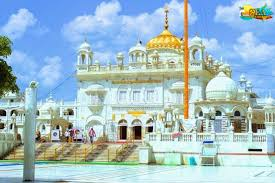

Takht Sri Patna Sahib

Takht Sri Patna Sahib, also known as Harmandir Sahib, is a revered Sikh shrine in Patna, Bihar. It marks the birthplace of
Guru Gobind Singh, the tenth Sikh Guru. The gurdwara, adorned with white marble and golden domes, exudes serenity and
spirituality. Inside, the sanctum houses the Guru Granth Sahib, the holy scripture of Sikhism. Pilgrims from around the
world visit to pay homage and seek blessings. The complex also includes museums, a langar hall serving free meals, and
accommodation facilities. It stands as a symbol of Sikh faith and heritage, embodying the teachings of compassion,
equality, and service to humanity.